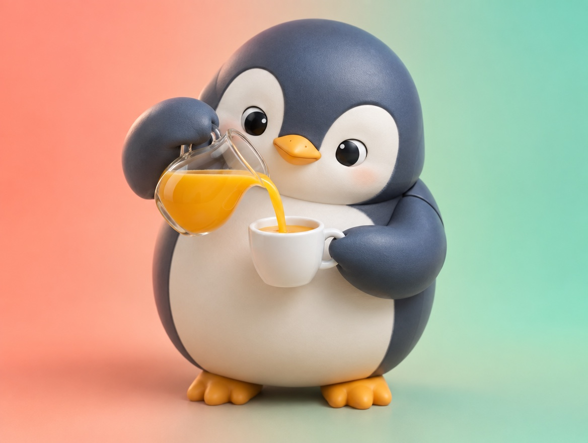

📝 DRAFT · 下書き — まだ本番に出していません · 下書き一覧
🐧 EVERYDAY LIFE⚡ 20 SEC
Say "please do this" instead of "don't do that" ✅

Flip It
It is said that "please do this" works better than "don't do that."
For Example
For example, not "Don't spill it," but "Pour it slowly."
One More
Not "Don't rush," but "Walk slowly."
⚡ TRY IT
The "please do" machine
Don't spill it!
Don't rush!
Don't be late!
Don't forget your umbrella!
Pour it slowly!
Walk slowly!
Leave 10 minutes early!
Put your umbrella by the door!
OK… but then what should I do? 🤔
Changing the words… ⚙️
Got it! Now I know what to do! 😄
🎯 It works
🏆 All 4 cards changed! Now everyone can see what to do.
Only Don't
With only "don't," people do not know what to do.
Easy To See
With "please do," they can see what to do right away.
For Everyone
This works with friends, and when you talk to yourself too.
📚 I learned this from the Japanese blog "Panda no Ondo".